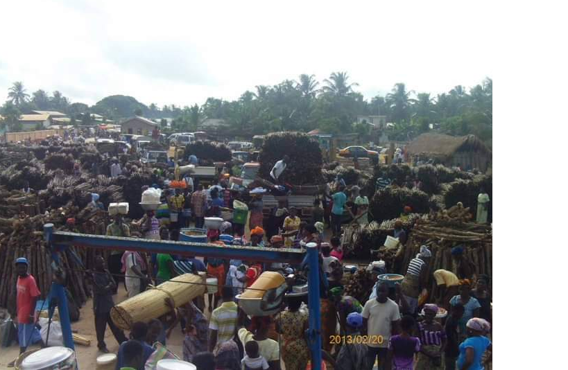
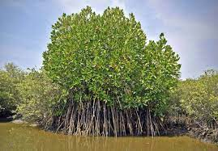

ACTIVITIES
As a sovering State among the 36 states of Anlo, Tunu township engages in numerous livelyhood activities. Below are some elabote works that keep them busy each day
farming
date palm, (Phoenix dactylifera), tree of the palm family (Arecaceae) cultivated for its sweet edible fruits. The date palm has been prized from remotest antiquity and may have originated in what is now Iraq. The fruit has been the staple food and chief source of wealth in the irrigable deserts of North Africa and the Middle East. Spanish missionaries carried the tree to the New World in the 18th and early 19th centuries. Date palms are grown in the Canary Islands, northern Africa, the Middle East, Pakistan, India, Mexico, and the U.S. state of California. dried dates dried dates Dates have a long shelf life, and many varieties, including the common deglet noor, are often sold dried and processed. The dried fruit is more than 50 percent sugar by weight and contains about 2 percent each of protein, fat, and mineral matter. Other types of dates, such as the medjool, are eaten as fresh produce and gradually shrink and wrinkle as they age. Beer glasses on dark table Britannica Quiz The History of Beer, Wine, and Some Foodstuffs Quiz Physical description The date palm grows about 23 metres (75 feet) tall. Its stem, strongly marked with the pruned stubs of old leaf bases, terminates in a crown of graceful, shining, pinnate leaves about 5 metres (16 feet) long. Floral spikes branch from the axils of leaves that emerged the previous year. Male and female flowers are borne on separate plants. Under cultivation the female flowers are artificially pollinated. The date is a one-seeded fruit, or drupe, usually oblong but varying much in shape, size, colour, quality, and consistency of flesh, according to the conditions of culture and the variety. More than 1,000 dates may appear on a single bunch weighing 8 kg (18 pounds) or more. date palm date palm The tree is propagated either from seeds or from suckers, offshoots that arise chiefly near the base of the stem in the early years of the life of the palm. Offshoots are used for commercial plantings. When offshoots are three to six years old and have formed roots of their own, they are removed and planted. Palms begin to bear fruit in 4 to 5 years and reach full bearing at 10 to 15 years, yielding 40 to 80 kg (90 to 180 pounds) or more each. Palms are known to live as long as 150 years, but their fruit production declines, and in commercial culture they are replaced at an earlier age. Uses All parts of the date palm yield products of economic value. Its trunk furnishes timber; the midribs of the leaves supply material for crates and furniture; the leaflets, for basketry; the leaf bases, for fuel; the fruit stalks, for rope and fuel; the fibre, for cordage and packing material; and the seeds are sometimes ground and used as stock feed. Syrup, alcohol, vinegar, and a strong liquor are derived from the fruit. The sap is also used as a beverage, either fresh or fermented, but, because the method of extraction seriously injures the palm, only those trees that produce little fruit are used for sap. When a palm is cut down, the tender terminal bud is eaten as a salad. Buraydah, Saudi Arabia: date market Buraydah, Saudi Arabia: date market Egypt, Iran, Saudi Arabia, and Iraq are the leading date-producing and date- exporting countries, although fruit from Algeria and Tunisia also is well known in Europe. California is the major American producer. The date palm is grown as an ornamental tree along the Mediterranean shores of Europe, and its leaves are used for the celebration of Palm Sunday among Christians and for the celebration of Sukkoth (Feast of Tabernacles) among Jews. Get a Britannica Premium subscription and gain access to exclusive content. Subscribe Now The Editors of Encyclopaedia Britannica This article was most recently revised and updated by Melissa Petruzzello.
The land is fertile. So people grow foodstuffs that individuals need to eat. Even the swampy areas support the growth of mangroves. Both men and women do this work. Some times they involve their children especially during harvest days. Food crops such as cassava, corn, sweet potato, yam and groundnut grow well in the area. That is not all, fruits also do well. some of the fruits one can get are: date palm, oranges, palm fruit, coconut and mango. the good coastal weather gives rainy and dry seaons which enable the farmers plant vegetables on small portions of land. Some of the people also engage in growing mangrove as a cash crop to sell
fishing
School

The wowen and young ladies actively do business. they trade in wares they could lay hand on. There is a big market at Anyanui that serves all the communities far and near. Some of the commodities they trade in are perishable goods such as fish and farm produce. Chief among the wares is Firewood that they gathered from their mangroves they grew.
Trading and commerce
firewood processing
Tunu township belives the mangroves is their Cocoa, they grow it, and when the bush matured they cut it into uniform lengths and died them. When the logs are drenched off water, they then would tie a considerable volume and place a monitary value on a bundle. The one beauty of the business is that each bundle appeared to be same in volume after they are tied. people from far buys the bundles and used them for cooking or other fires.it is a hard but lucretive business.
Entertainment and Others
Tunu township belives the mangroves is their Cocoa, they grow it, and when the bush matured they cut it into uniform lengths and died them. When the logs are drenched off water, they then would tie a considerable volume and place a monitary value on a bundle. The one beauty of the business is that each bundle appeared to be same in volume after they are tied. people from far buys the bundles and used them for cooking or other fires.it is a hard but lucretive business.